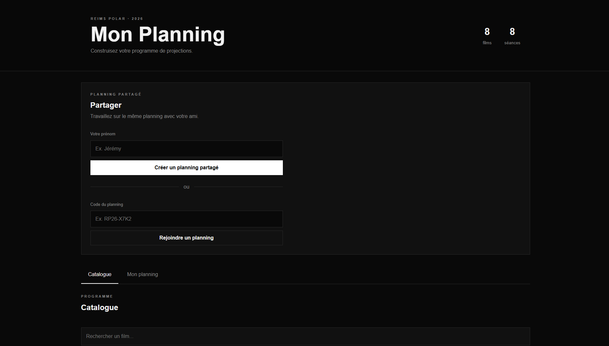
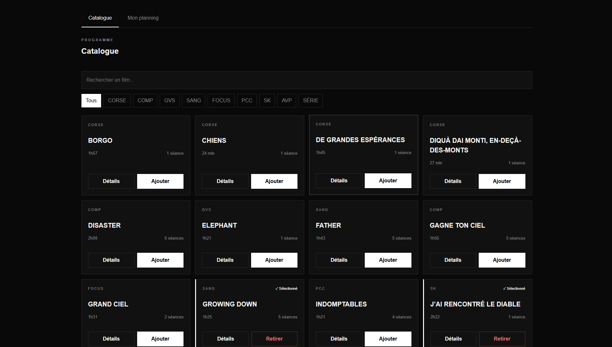
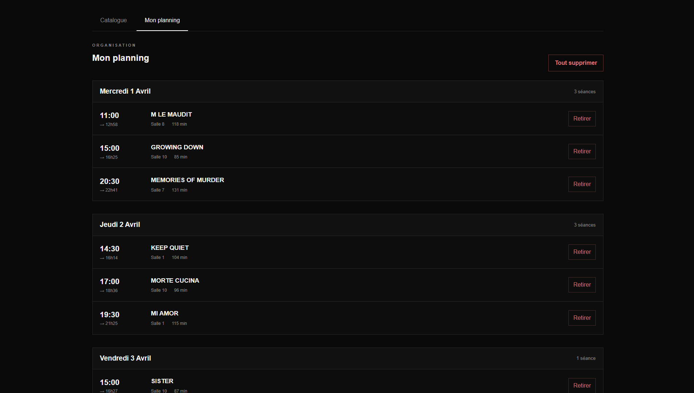

DATA BASE
L'intégralité du programme de Reims Polar est transformée en une base de données structurée et consultable, regroupant films, catégories, durées, horaires des séances et salles dans une interface unique.
A PERSONAL FESTIVAL PLANNER DESIGNED TO TURN A COMPLEX PROGRAMME INTO A CLEAR, CUSTOM AND SHAREABLE EXPERIENCE.

Reims Polar Planner est une application web développée à partir d'un besoin personnel : faciliter la préparation d'un festival de cinéma à la programmation dense.
Le projet exploite les données de programmation de Reims Polar afin de transformer un programme de projections en un catalogue interactif permettant de rechercher, filtrer et sélectionner les films souhaités.
Une fois les films sélectionnés, l'application construit automatiquement un planning à partir des différentes séances disponibles et permet d'identifier les séances qui se chevauchent.
Le projet a ensuite évolué vers une logique collaborative avec la possibilité de partager son planning avec un autre festivalier, d'afficher ses choix et de comparer les programmes.
Le projet mélange donc développement web , traitement de données et expérience utilisateur autour d'un cas d'usage concret.
L'intégralité du programme de Reims Polar est transformée en une base de données structurée et consultable, regroupant films, catégories, durées, horaires des séances et salles dans une interface unique.
Les informations sont organisées comme une véritable base de données destinée à accompagner la sélection.
Chaque séance sélectionnée est comparée aux autres afin d'identifier automatiquement les chevauchements et les conflits potentiels dans le planning.
L'interface est prévu pour une collaboration entre les utilisateurs.


ACCESS TO THE NEXT PROJECT
RETURN TO ARCHIVE </RETURN TO ARCHIVE/>